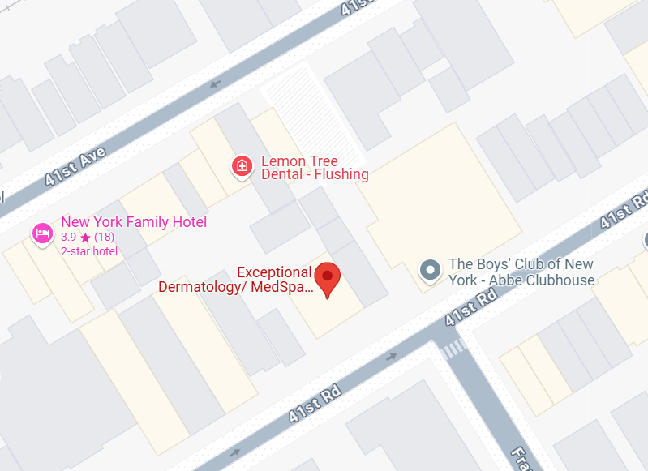
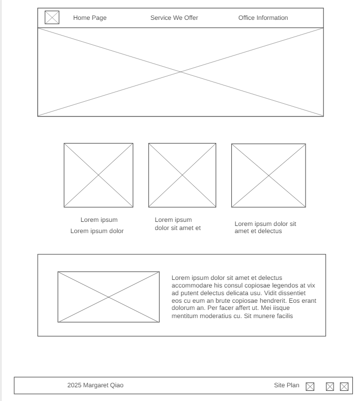
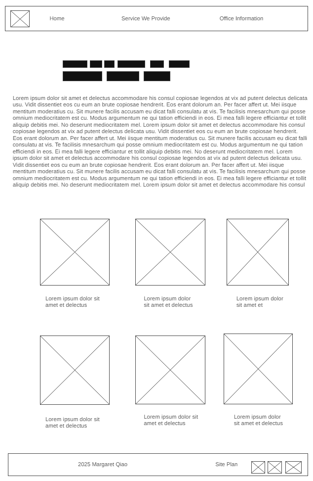
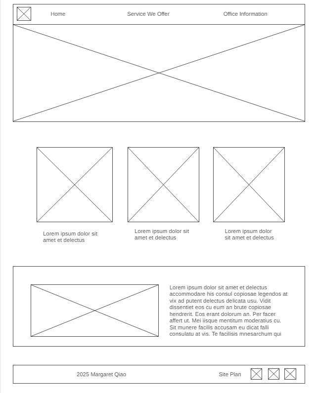

Overview
Purpose
[Everyone with skin problems or want to improve their beauty are welcome! We provide professional service to treat all your skin problems! ]
Audience
[People who wants to improve their beauty or has skin problems]
Branding
Website Logo
Style Guide
Color Palette
| Primary | Secondary | Accent 1 | Accent 2 |
|---|---|---|---|
Typography
Heading Font: Monomakh
Paragraph Font: Monomakh noto sans-serif
Normal paragraph example
We care about your concern and we can fix it for you.
Colored paragraph example
Insurance Accept Most Insurance Plans, including Medicare & Medicaid.
Navigation
Site Map
Content
Home page
Welcome to Exceptional Dermatology/ MedSpa, your premier destination for comprehensive dermatology and medical spa services in Queens, NY. As certified professionals, we are dedicated to providing exceptional care that exceeds your expectations. Our practice is proudly women-owned and operated, reflecting our commitment to diversity and inclusivity. With Mandarin-speaking services available, we ensure effective communication and personalized care for all our patients. Established in March 2022, our office embodies a culture of honesty, care, and compassion, where every patient is treated with respect and empathy. Led by Dr. Yan Wang, a renowned dermatologist holding the titles of DCNP and FNP-BC, we offer a wide range of dermatology services covering various skin conditions and concerns.
Images for the Home page


Service
At Exceptional Dermatology/MedSpa, we prioritize high-quality patient care, addressing not only the physical aspects but also the psychological and emotional aspects of skin health. Our personalized treatment plans are crafted after thorough consultations, ensuring patients receive tailored care that meets their unique needs. In addition to dermatology services, we specialize in medical spa treatments designed to rejuvenate and enhance your natural beauty. From laser services targeting skin imperfections to filler services and hair loss treatments, we offer a comprehensive range of services to help you look and feel your best.
Images for the Page 2

Office information
Location 132-59 41 Road, Suite CB, Flushing, NY11355
Opening Hours 9:30 AM–5:30 PM （Mon，Tue，Wed，Thur，Sat）
Images for the Page 3
Wireframes
Create three wireframes for your site. One for each page and list them here
Home
[Any additional details about home that the wireframe does not make clear]
[Page 2]
[Any additional details about page 2 that the wireframe does not make clear]
[Page 3]
[Any additional details about page 3 that the wireframe does not make clear]
